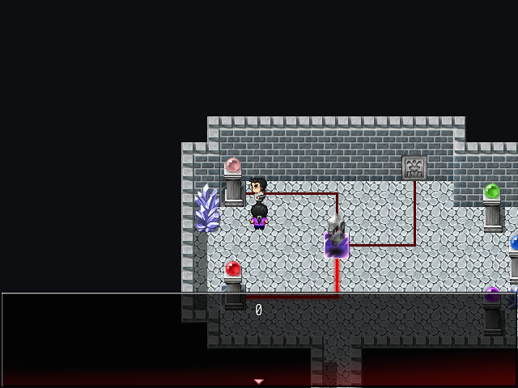
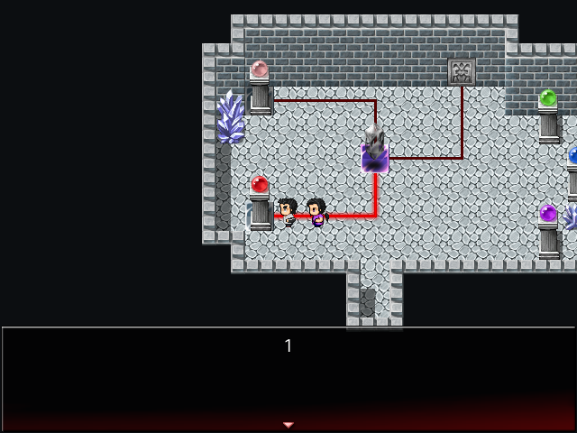
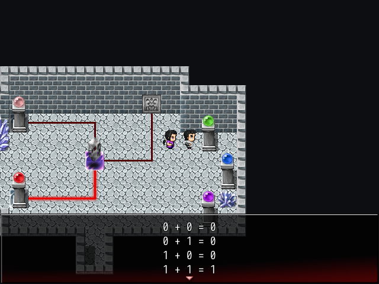
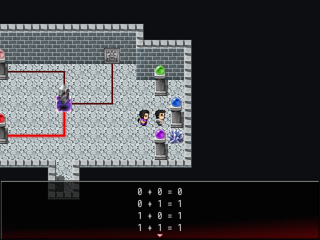
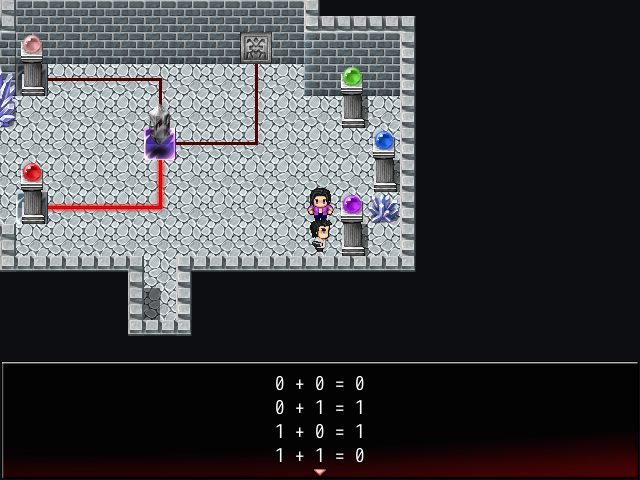
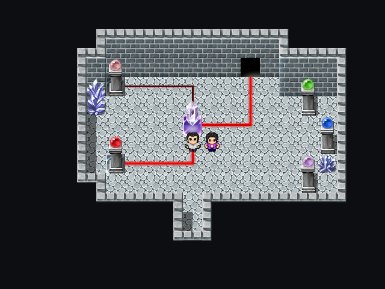
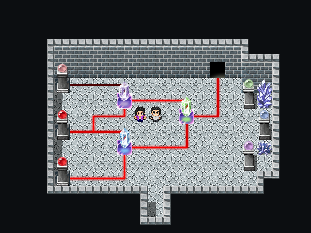
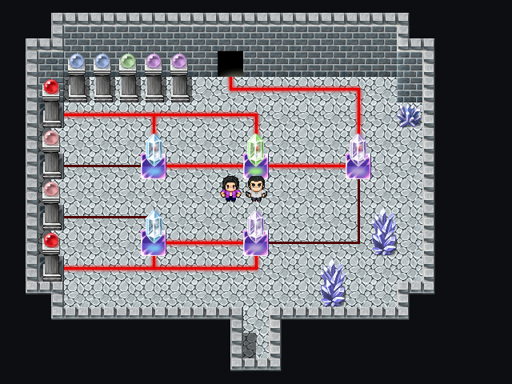
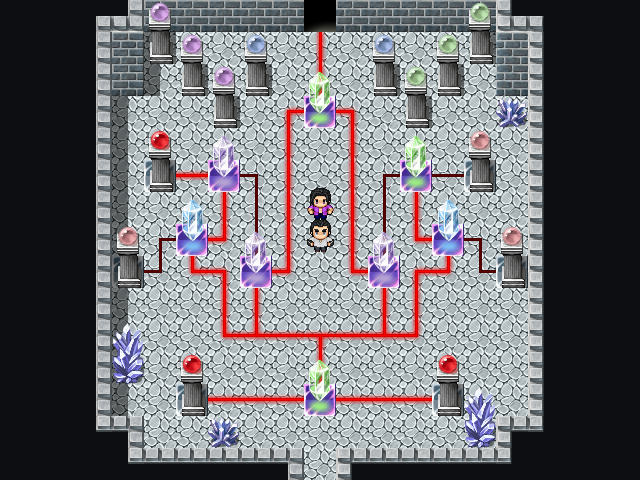

Liberation of Eria: Chapter 5 - Crystal Circuits Puzzle
This page is best viewed on a computer or tablet.
In Liberation of Eria - Chapter 5, you will encounter a somewhat difficult puzzle in Raphael's Domain. Here are some hints to help you solve it.
Hint 1: Examine the pillars with the red crystal balls on them.
|  |  |
Notice how the dimmer ball (unpowered) shows a value of 0, and the brighter ball (powered) shows a value of 1.
The goal of the puzzle is to get the powered line connected to the door.
Hint 2: Examine the pillars with the green, blue, and purple crystal balls on them.
|  |  |  |
These are the three crystal colors that you can use. They control the flow of power. The pillars show which colors are available to use. When the orb is dimmed, it means that color is already used.
The green crystal only lets power flow through if both inputs are powered (1).
The blue crystal only lets power flow through as long as one of the inputs are powered (1).
The purple crystal only lets power flow through if only one input is powered (1).
Solutions and Explanations
Stop scrolling at this point if you would like to solve the puzzle on your own!
If you are knowledgeable on logic gates, you should already understand the puzzle and should be able to solve it with ease. If not, here are the solutions.
Solution: Room 1
Both a purple or blue crystal will work in this instance. This is because the current input is (0+1), and both the purple and blue crystal produces power (0+1=1) with this input.
Solution: Room 2
Taking into consideration that the green crystal has already been used, there are only two options for the crystals: blue and purple. As we previously learned, both a blue and purple will produce power for the inputs on top (0+1), but only one crystal, blue, will produce power for the inputs on the bottom (1+1). Since the green crystal will only produce power with input (1+1), so we need to use the purple crystal on top and the blue crystal on the bottom.
Solution: Room 3
Here, one of the purple crystals and the only green crystal are already being used. Let's divide this into the top half and bottom half. Both these halves will act as inputs for the purple crystal connected to the door, which we will call the door crystal. We will have to find a combination that results in power, which are (0+1=1) and (1+0=1).
For the top half, if we use a blue crystal, it will give (1+1) to the green crystal. This produces power for the door crystal, fulfilling one of the input combinations (1). For the bottom half, if we use a blue crystal on the left and a purple crystal on the right, it will produce no power for the door crystal (0). With the input (1+0) for the door crystal, the door is powered.
Solution: Room 4
This room is slightly more complicated. Here, we must use all the crystals in order to open the door.
Apply everything we learned from the previous rooms. This is one possible solution.